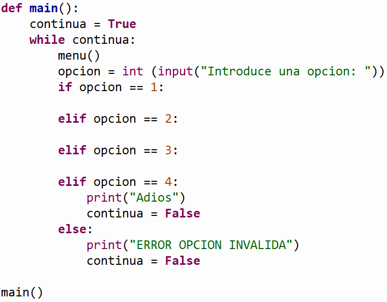

.

Descripción:
- Desarrolla, en conjunto con el
profesor, algunos problemas que implican el uso de strings o cadenas de texto.

Objetivos:
- Aplicar el concepto de strings
o cadenas
de texto en la solución de problemas.
- Aplicar los conocimientos
sobre funciones.

Modalidad:

Instrucciones:
-
Implementa las siguientes
funciones haciendo uso de strings o cadenas de texto:

Ejercicios:
-
La función cuentaVocales(cadena)
que recibe una cadena y devuelve el número de
vocales que hay en la cadena.
Ejemplos:
cuentaVocales("Hola mundo") devolvería: 4
cuentaVocales("Hola MUNDO") devolvería: 4
-
La función insertaHtml(cadena) que
recibe una cadena de texto e inserta al principio de la cadena
"<html><body>"
y al final "</body></html>".
Ejemplo:
insertaHtml("Hola mundo") devolvería: "<html><body>Hola mundo</body></html>"
-
La función insertaSaltos(cadena) que
recibe una cadena de texto y reemplaza los saltos de línea "\n" en la cadena
"Hola \n
mundo" por <br>.
Ejemplo:
insertaSaltos(("Hola a todos \n
mi nombre es Goku!"") devolvería: "Hola a todos <br> mi nombre es Goku!"
-
La función formatoWeb(cadena) que
recibe una cadena de texto y la convierte en texto de una pagina
web. Para lo cual necesitas llamar a las dos funciones anteriores
(insertaHtml e insertaSaltos).
Ejemplo:
formatoWeb("Hola a todos \n mi nombre es Goku!") devolvería: "<html><body>Hola a todos <br>
mi nombre es Goku!</body></html>"
-
La función esPalindromo(cadena) que
recibe una cadena de texto y y devuelve True si la
cadenas es palíndromo o False en caso contrario.
Ignora los espacios en blanco, las mayúsculas y minúsculas.
Ejemplos:
esPalindromo("Anita lava la tina") devolvería:
True
esPalindromo("Hola Mundo") devolvería: False
-
La función
menu() que imprima el siguiente menú en
pantalla:
1. Cuenta
vocales
2. Formato
web
3.
Es palindromo
4. Salir
-
La función
main()
que utilice la función menu para desplegar el menú
correspondiente y de acuerdo a la opción seleccionada por el usuario
le dé la oportunidad de ejecutar cualquiera de las funciones que
han sido construidas. Utiliza el estatuto de control if.
Recuerda que la captura de datos debe ser realizada en la sección
del main. Debes utilizar el ciclo while para que
se cicle el programa hasta que el usuario introduzca la opción de
salir o una opción inválida.
En el
script
principal manda llamar a
la función main.
Guarda tu archivo como:
H_Matricula.py

Ejercicios:
-
Los laboratorios Ric o Linno, expertos en biotecnología, han
desarrollado una nueva técnica de conocer el sexo predominante en
un ser humano. Esta técnica está basada en el número de cromosomas
X y Y que tiene un ser humano. El sexo femenino está definido por
un número mayor de cromosomas X que cromosomas Y , en el sexo
masculino el número de cromosomas Y es mayor que el de los
cromosomas X. Desafortunadamente no se puede concluir nada al
respecto en caso de que los cromosomas X y Y estén balanceados,
pues el sexo aún no está definido. Escribe las siguientes
funciones:
-
La función cromosomasX(cadena)
que recibe una cadena de texto y regresa el número
total de caracteres 'X' que hay en la cadena.
-
La función cromosomasY(cadena)
que recibe una cadena de texto y regresa el número total de
caracteres 'Y' que hay en la cadena.
-
La función determinaSexo(cadena)
que recibe una cadena de texto y utilizando las funciones
cromosomasX y cromosomasY despliega en pantalla el sexo de un ser
humano.
NOTA: Para poder evaluar una secuencia de
cromosomas, se utiliza una cadena de texto cuyo contenido son X's
(que representan los cromosomas X) y Y's (que representan los
cromosomas Y).
Ejemplos:
determinaSexo("XXXXYYXY") desplegaría:
Femenino
determinaSexo("XYYXYYXY") desplegaría:
Masculino
determinaSexo("XXYYXYXY") desplegaría:
Indefinido
-
La función imprimeLimpio(cadena)
que recibe una cadena de texto y despliega el contenido de la
cadena sin espacios en blanco. Esta función no modifica la cadena,
solo ignora los espacios en blanco al momento de imprimir.
Ejemplos:
imprimeLimpio("XXXX Y YX Y") desplegaría:
XXXXYYXY
imprimeLimpio("X YX YY") desplegaría:
XYXYY
-
La función
menu() que imprima el siguiente menú en
pantalla:
1.
Determina sexo
2. Imprime
limpio
3.
Salir
-
La función
main()
que utilice la función menu para desplegar el menú
correspondiente y de acuerdo a la opción seleccionada por el usuario
le dé la oportunidad de ejecutar cualquiera de las funciones que
han sido construidas. Utiliza el estatuto de control if.
Recuerda que la captura de datos debe ser realizada en la sección
del main. Debes utilizar el ciclo while para que
se cicle el programa hasta que el usuario introduzca la opción de
salir o una opción inválida.
-
En el
script
principal
manda llamar a
la función main.
-
Guarda tu archivo como:
H_Matrícula.py
Ejercicios:
-
La función invierteCadena(cadena)
que recibe una cadena de texto y regresa la cadena pero invertida.
Ejemplos:
invierteCadena("Hola mundo") devolvería: "odnum
aloH")
invierteCadena("anita") devolvería:("atina")
-
La función escribeAsteriscos(cadena,
letra) que
recibe una cadena de texto y una letra. La función deberá imprimir
la cadena, pero en cada letra diferente de “letra”
deberá escribir asteriscos.
Ejemplos:
escribeAsteriscos("This makes array operations faster but
less safe", 'a') imprimiría:
******a****a**a******a*******a***************a**"
escribeAsteriscos("Hola mundo", 'o')
imprimiría: *o** ****o
a
función eliminaEspacios(cadena)
que recibe una cadena de texto y regresa la cadena sin espacios en
blanco. La función deberá eliminar todos los espacios en blanco de
la cadena original.
Ejemplos:
eliminaEspacios("This makes array operations faster but less
safe") devolvería:
Thismakesarrayoperationsfasterbutless
eliminaEspacios("Hola mundo") regresaría:
Holamundo
-
La función
eliminaSubcadena(cadena, subcadena) que recibe dos
cadenas de texto (cadena y subcadena). La función deberá buscar la
“subcadena” dentro de la “cadena”
original y deberá eliminarla. La función deberá regresar la cadena
sin la subcadena.
Ejemplos:
eliminaSubcadena("Hoy es el día en que entrego este trabajo",
"este") devolvería:
Hoy es el día en que entrego trabajo
eliminaSubcadena("Hola mundo", "mundo")
devolvería: Hola
-
La función esPalindromo(cadena) que
recibe una cadena de texto y y devuelve True si la
cadenas es palíndromo o False en caso contrario.
Ignora los espacios en blanco, las mayúsculas y minúsculas.
Ejemplos:
esPalindromo("Anita lava la tina") devolvería:
True
esPalindromo("Hola Mundo") devolvería: False
-
La función
menu() que imprima el siguiente menú en
pantalla:
1. Invierte
cadena
2. Escribe
asteriscos
3.
Elimina espacios
4. Elimina subcadena
5.
Es palindromo
6. Salir
main()
que utilice la función menu para desplegar el menú
correspondiente y de acuerdo a la opción seleccionada por el usuario
le dé la oportunidad de ejecutar cualquiera de las funciones que
han sido construidas. Utiliza el estatuto de control if.
Recuerda que la captura de datos debe ser realizada en la sección
del main. Debes utilizar el ciclo while para que
se cicle el programa hasta que el usuario introduzca la opción de
salir o una opción inválida.
En el
script
principal manda llamar a
la función main.
Guarda tu archivo como: H_Matrícula.py
|